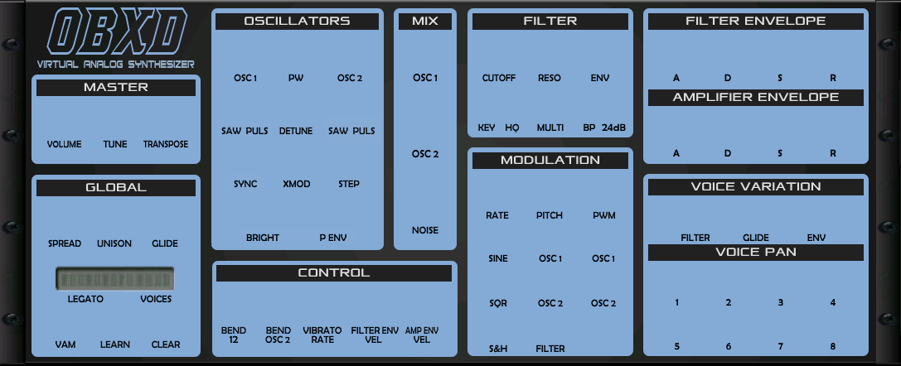

<polymer-element name="dawsynth-obxd" attributes="host">
<template>
<flip-card id="flipper" axis="y">
	<div id="synthpanel" class="front">
		
		
		<!-- master -->
		<daw-knob id="VOLUME" x="53" y="120" value="0.4"></daw-knob>
		<daw-knob id="TUNE" x="114" y="120" value="0.5"></daw-knob>
		<daw-knob id="OCTAVE" x="176" y="120" value="0.5"></daw-knob>
		
		<!-- global -->
		<daw-knob id="UDET" x="53" y="241" value="0"></daw-knob>
		<daw-toggle id="UNISON" x="125" y="251"></daw-toggle>
		<daw-knob id="PORTAMENTO" x="175" y="241" value="0"></daw-knob>
		<daw-toggle id="LEGATOMODE" x="65" y="321" states="4"></daw-toggle>
		<daw-toggle id="VOICE_COUNT" x="172" y="321" states="8"></daw-toggle>
		<daw-toggle id="ASPLAYEDALLOCATION" x="65" y="372"></daw-toggle>
		<daw-toggle id="MIDILEARN" x="126" y="372"></daw-toggle>
		<daw-toggle id="UNLEARN" x="185" y="372"></daw-toggle>
		
		<!-- oscillators -->
		<daw-knob id="OSC1P" x="271" y="40" value="0"></daw-knob>
		<daw-knob id="PW" x="334" y="40" value="0"></daw-knob>
		<daw-knob id="OSC2P" x="397" y="40" value="0"></daw-knob>
		<daw-toggle id="OSC1Saw" x="265" y="114"></daw-toggle>
		<daw-toggle id="OSC1Pul" x="296" y="114"></daw-toggle>
		<daw-knob id="OSC2_DET" x="334" y="104" value="0"></daw-knob>
		<daw-toggle id="OSC2Saw" x="394" y="114"></daw-toggle>
		<daw-toggle id="OSC2Pul" x="425" y="114"></daw-toggle>
		<daw-toggle id="OSC2HS" x="282" y="178"></daw-toggle>
		<daw-knob id="XMOD" x="334" y="168" value="0"></daw-knob>
		<daw-toggle id="OSCQuantize" x="407" y="178"></daw-toggle>
		<daw-knob id="BRIGHTNESS" x="291" y="232" value="1"></daw-knob>
		<daw-knob id="ENVPITCH" x="376" y="232" value="0"></daw-knob>

		<!-- mix -->
		<daw-knob id="OSC1MIX" x="490" y="40" value="1"></daw-knob>
		<daw-knob id="OSC2MIX" x="490" y="132" value="1"></daw-knob>
		<daw-knob id="NOISEMIX" x="490" y="224" value="0"></daw-knob>

		<!-- control -->
		<daw-toggle id="BENDRANGE" x="267" y="354"></daw-toggle>
		<daw-toggle id="BENDOSC2" x="321" y="354"></daw-toggle>
		<daw-knob id="BENDLFORATE" x="364" y="345" value="0.4"></daw-knob>
		<daw-knob id="VFLTENV" x="428" y="345" value="0"></daw-knob>
		<daw-knob id="VAMPENV" x="486" y="345" value="0"></daw-knob>
		
		<!-- filter -->
		<daw-knob id="CUTOFF" x="577" y="40" value="0.4"></daw-knob>
		<daw-knob id="RESONANCE" x="638" y="40" value="0"></daw-knob>
		<daw-knob id="ENVELOPE_AMT" x="699" y="40" value="0"></daw-knob>
		<daw-toggle id="FLT_KF" x="573" y="110"></daw-toggle>
		<daw-toggle id="FILTER_WARM" x="604" y="110"></daw-toggle>
		<daw-knob id="MULTIMODE" x="643" y="106" value="0.5" class="tiny"></daw-knob>
		<daw-toggle id="BANDPASS" x="697" y="110"></daw-toggle>
		<daw-toggle id="FOURPOLE" x="728" y="110"></daw-toggle>
		
		<!-- modulation -->
		<daw-knob id="LFOFREQ" x="576" y="207" value="0"></daw-knob>
		<daw-knob id="LFO1AMT" x="640" y="207" value="0"></daw-knob>
		<daw-knob id="LFO2AMT" x="704" y="207" value="0"></daw-knob>
		<daw-toggle id="LFOSINWAVE" x="587" y="269"></daw-toggle>
		<daw-toggle id="LFOOSC1" x="651" y="269"></daw-toggle>
		<daw-toggle id="LFOPW1" x="714" y="269"></daw-toggle>
		<daw-toggle id="LFOSQUAREWAVE" x="587" y="323"></daw-toggle>
		<daw-toggle id="LFOOSC2" x="651" y="323"></daw-toggle>
		<daw-toggle id="LFOPW2" x="714" y="323"></daw-toggle>
		<daw-toggle id="LFOSHWAVE" x="587" y="378"></daw-toggle>
		<daw-toggle id="LFOFILTER" x="651" y="378"></daw-toggle>
		
		<!-- envelopes -->
		<daw-knob id="FATK" x="791" y="40" value="0"></daw-knob>
		<daw-knob id="FDEC" x="853" y="40" value="0"></daw-knob>
		<daw-knob id="FSUS" x="916" y="40" value="1"></daw-knob>
		<daw-knob id="FREL" x="980" y="40" value="0"></daw-knob>
		<daw-knob id="LATK" x="791" y="132" value="0"></daw-knob>
		<daw-knob id="LDEC" x="853" y="132" value="0"></daw-knob>
		<daw-knob id="LSUS" x="916" y="132" value="1"></daw-knob>
		<daw-knob id="LREL" x="980" y="132" value="0"></daw-knob>
		
		<!-- voice variation -->
		<daw-knob id="FILTERDER" x="817" y="240" value="0.2" class="tiny"></daw-knob>
		<daw-knob id="PORTADER" x="890" y="240" value="0.2" class="tiny"></daw-knob>
		<daw-knob id="ENVDER" x="963" y="240" value="0.2" class="tiny"></daw-knob>
		
		<!-- voice pan -->
		<daw-knob id="PAN1" x="796" y="318" value="0.5" class="tiny"></daw-knob>
		<daw-knob id="PAN2" x="858" y="318" value="0.5" class="tiny"></daw-knob>
		<daw-knob id="PAN3" x="921" y="318" value="0.5" class="tiny"></daw-knob>
		<daw-knob id="PAN4" x="984" y="318" value="0.5" class="tiny"></daw-knob>
		<daw-knob id="PAN5" x="796" y="371" value="0.5" class="tiny"></daw-knob>
		<daw-knob id="PAN6" x="858" y="371" value="0.5" class="tiny"></daw-knob>
		<daw-knob id="PAN7" x="921" y="371" value="0.5" class="tiny"></daw-knob>
		<daw-knob id="PAN8" x="984" y="371" value="0.5" class="tiny"></daw-knob>
	</div>
	</div>
	<div class="back">
		<dawplug-specs id="specs"></dawplug-specs>
	</div>
</flip-card>
<style>
	:host { display:inline-block; transform-origin:top left; }
	daw-knob { background-image:url(gui/knoblsd.png); content:"states:127;"; width:48px; height:48px; }
	daw-knob.tiny { background-image:url(gui/knobssd.png); content:"states:127;"; width:42px; height:42px; }
	daw-toggle { background-image:url(gui/button.png); height:35px; }
	#VOICE_COUNT { background-image:url(gui/voices.png); height:32px; }
	#LEGATOMODE { background-image:url(gui/legato.png); height:32px; }

	#flipper { position:relative; }
	.front { background:#444; display:inline-block; }
	.back { position:absolute; top:0; background:#fff; width:100%; height:100%; }
	#specs { width:242px; display:block; height:442px; }
</style>
</template>
	
	<script src="obxd.js"></script>		
	<script>
	Polymer("dawsynth-obxd",
	{
		ready: function()
		{			
			var self = this;
			["daw-knob","daw-toggle"].forEach(function (nodename)
			{
				var widgets = self.$.synthpanel.querySelectorAll(nodename);
				for (var i=0; i<widgets.length; i++)
					widgets[i].addEventListener("change", self);
			});
			this.map = ["?","MIDILEARN","VOLUME","VOICE_COUNT","TUNE","OCTAVE",
				"BENDRANGE","BENDOSC2","LEGATOMODE","BENDLFORATE","VFLTENV","VAMPENV",
				"ASPLAYEDALLOCATION","PORTAMENTO","UNISON","UDET","OSC2_DET",
				"LFOFREQ","LFOSINWAVE","LFOSQUAREWAVE","LFOSHWAVE","LFO1AMT","LFO2AMT",
				"LFOOSC1","LFOOSC2","LFOFILTER","LFOPW1","LFOPW2",
				"OSC2HS","XMOD","OSC1P","OSC2P","OSCQuantize","OSC1Saw","OSC1Pul",
				"OSC2Saw","OSC2Pul","PW","BRIGHTNESS","ENVPITCH",
				"OSC1MIX","OSC2MIX","NOISEMIX",
				"FLT_KF","CUTOFF","RESONANCE","MULTIMODE","FILTER_WARM","BANDPASS","FOURPOLE","ENVELOPE_AMT",
				"LATK","LDEC","LSUS","LREL","FATK","FDEC","FSUS","FREL",
				"ENVDER","FILTERDER","PORTADER",
				"PAN1","PAN2","PAN3","PAN4","PAN5","PAN6","PAN7","PAN8",
				"UNLEARN",
				"ECONOMY_MODE_?","LFO_SYNC_?","PW_ENV_?","PW_ENV_BOTH_?","ENV_PITCH_BOTH_?",
				"FENV_INVERT_?","PW_OSC2_OFS_?","LEVEL_DIF_?","SELF_OSC_PUSH_?"
				];
			this.$.specs.model = this.specs;			
		},
		
		init: function(host)
		{
			this.path = this.$.background.src;
			this.path = this.path.slice(0, this.path.lastIndexOf("gui/background.png"));
			this.synth = new OBxd(host, this.path);
			this.synth.gui = this;
		},
		exit: function ()
		{
			this.synth.disconnect();
			this.synth.host.disposePlugin(this.synth, this.path + "obxd.nmf");
		},
		flip: function () { this.$.flipper.flip(); },
		
		setPatch: function(i)
		{
			var patch = this.synth.bank[i];
			if (patch) for (var i=1; i<patch.length; i++)
			{
				var id = this.map[i];
				var widget = this.$[id];
				if (id == "VOICE_COUNT") widget.value = Math.round(patch[i] * 8 - 1);
				else if (id == "LEGATOMODE") widget.value = Math.round(patch[i] * 4 - 1);
				else widget.value = patch[i];
			}
		},
		handleEvent: function(e)
		{
			var ikey = this.map.indexOf(e.detail.key);
			this.synth.setParam(ikey, e.detail.value);
		},
		
		specs: {
			name: "OBxd",
			description: "Oberheim OB-X emulation",
			type: "subtractive",
			oscs: "2 (tri,pulse,saw) + noise",
			mod: "sync + fm",
			alias: "BLEP",
			filters: "LPF (12/24dB), BP + Notch + HP (12dB)",
			egs: "2 (ADSR -> amp,cutoff)",
			lfos: "1 -> pitch",
			fx: null,
			orig: {
				format: "Juce",
				version: "1.11",
				author: "Datsounds (Vadim Filatov)",
				date: "2014",
				website: "https://obxd.wordpress.com",
				sources: "https://github.com/2DaT/Obxd",
				license: "GPL3"
				},
			web: {
				format: "PNaCl",
				version: "0.1",
				author: "Jari Kleimola",
				date: "2014-15",
				weight: "481 kB",
				// website: "https://mediatech.aalto.fi/publications/webservices/dawplugins/",
				sources: "https://github.com/jariseon/webdawplugins",
				},
			patches: [
				"https://obxd.wordpress.com",
				"http://www.kvraudio.com/product/obxd---virtual-analog-synthesizer-by-datsounds/downloads"
			]
		}
	});
	</script>
</polymer-element>